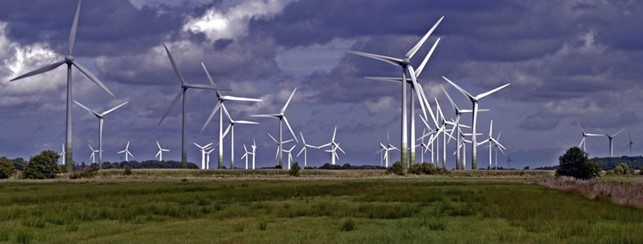
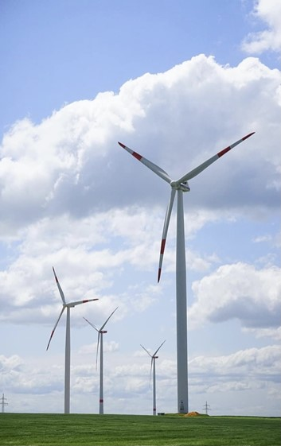

The wind power plant
Translated from a technical paper by Dorothee Milles.
Wind power plants allow us to convert solar energy into electrical energy (or thermal energy). Using this energy, a large amount of green hydrogen can be produced through electrolysis.
But first, we need to explain how wind is actually formed: The sun, or rather solar energy, heats the air to varying degrees in different places, creating areas of high and low pressure. Wind is generated when this pressure difference is balanced out by air masses (consisting of air particles). Put simply, wind is a faster and stronger air mass than the rest, driven by the energy of the sun.
The rotor blades and rotor of a wind turbine capture the
kinetic energy of the wind and convert it
into rotational energy. Therefore, the blades must be as long and
as large as possible. In order for power to be extracted,
the wind’s flow velocity must be reduced. According to
the famous physicist Betz, the power P increases proportionally to the cube of the velocity v. Thus,
doubling the velocity yields eight times the power,
and doubling the rotor diameter yields four times the power. This
demonstrates how efficient wind turbines are.
The gearbox then converts the relatively slow rotation
of the rotor (approx. 22 revolutions per minute) into a high rotational speed (approx. 1,500
revolutions per minute) for the generator. The generator is the
heart of the wind turbine, as it converts rotational energy into electrical energy.
To illustrate just how efficient wind turbines are, here is an
example: The “Gode Wind 1 and 2” wind farm located in the
North Sea and comprises of 97 wind turbines, each with a capacity of 6 MW.
Gode Wind 1 generates approximately 330 MW and Gode Wind 2 approximately 252 MW, meaning
together they can supply a total of 600,000 households. In Germany,
the green electricity from these wind turbines could be used to produce 1.1
billion tons of hydrogen without emitting pollutants. Based on my text and
this example, it becomes clear just how worthwhile wind energy is and
what potential it holds for our
future in combination with green hydrogen.
The energy calculation for the Gode Wind 1 and 2 wind farm is as follows:
Full-load hours per year: \(365 \cdot 24 \ h = 8\ 760 \ h\)
\[8\ 760 \ h \cdot 3\ 600 = 31\ 536\ 000 \ s \]
Power P of the wind farms: \(330 \ MW + 252 \ MW = 582 \ MW\)
\[P \cdot t = W\]
Theoreticla maximum energy yield:
\[582 \ MW \cdot 31\ 536\ 000 \ s = 1,8353952 \cdot 10^{16} \ Ws\] \[1,8353952 \cdot 10^{16} \ Ws = 5,098 \cdot 10^9 \ kWh\]
45,7% of that represent a realistic energy amount:
2 329 932 240 kWh
Corresponding amount of hydrogen:
One kilogram of hydrogen can store 33.3 kWh of energy, so:
W = energy of hydrogen per kg
\[ \frac {2\ 329\ 932\ 240\ kWh \cdot kg} {33,3\ kWh} = 69\ 963\ 543,5\ kg \]

